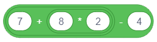
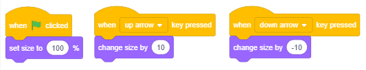

Sequencing Steps¶

In the previous lesson we learned about motion commands, and now we will see how we can use the commands from the Looks and Events group. We will show how we assign a particular behavior to our sprite by connecting blocks to form a script. The projects in this lesson consist of scripts made up from a series of consecutive steps. We can say that this type of scripts have a simple linear structure.
The Terminology and the Visual Grammar of the Scratch Language
Sprites can execute more that 100 commands. The blocks which correspond to commands represent the vocabulary of the Scratch language, and the rules by which they are linked correspond to its grammar. The blocks are kept in the Blocks Palette, and they are divided into 10 different colours:
|
|
|
|
|
 Motion,
Motion, Sound,
Sound, Sensing,
Sensing, My Blocks
My Blocks Extensions.
Extensions.Blocks are grouped together to make it easier for users to create scripts. Regardless of how complex the behavior of a certain sprite is, the script that describes it is made up of a set of simple operations contained in these 10 types. If you know which type of activity the sprite should perform, you can easily choose the right group and take from it the corresponding block.
There are independent and function blocks.
Independent blocks correspond to language commands, that is, they correspond to algorithm steps. Some of them have input fields where the user can set a specific value.
Function blocks return values. They cannot stand independently in a script, they have to be inserted into block fields which receive values and specify their actions.
The blocks are shaped so that only those which form a correct language construction can be connected, that is to say, Scratch has a visual grammar which does not allow making syntax mistakes.

Independent Blocks
In the text, we will refer to blocks which correspond to processing steps as stack blocks. Every stack block corresponds to one activity, that is, it answers the question WHAT should be done. For example, the  block commands the sprite to move a certain number of steps in its current direction. The shape of this block looks like a Lego brick, and the entire script looks like a stack of bricks.
block commands the sprite to move a certain number of steps in its current direction. The shape of this block looks like a Lego brick, and the entire script looks like a stack of bricks.
The specified number of steps is entered into the white circle - input field of the block.
In the  block one input field has a shape similar to a rounded rectangle, and the other has a shape of a circle. Rounded rectangle input fields can receive both text and number values, while the circle ones can only receive number values.
block one input field has a shape similar to a rounded rectangle, and the other has a shape of a circle. Rounded rectangle input fields can receive both text and number values, while the circle ones can only receive number values.
The  block has three input fields.
block has three input fields.
Some of the blocks have hexagonal input fields, for example the control block  . These input fields can only receive logical values (true or false).
. These input fields can only receive logical values (true or false).
In the Control group of blocks there are C-shaped blocks called С-blocks. The slot inside the C-block is a specific type of an input field where you can insert the entire script. The  block has two input fields: one for the number and one for the script.
block has two input fields: one for the number and one for the script.
The is also one control block which is E-shaped and it has three input fields, one for the condition (logical value), and two for the scripts. The first input field for the scripts gives the command for what should be done if the condition has been fulfilled, and the other what should be done if it hasn’t.
Hat blocks correspond to the initial algorithm step. They answer the question WHEN will the script run. These blocks have rounded tops, they are placed on the top of the stack, and they are connected with the block below through a bump at the bottom. Hat blocks define what should be done in order for the stack below it to start running. You can, for example, click on the green flag or press a specific key on the keyboard.
Cap blocks correspond to the final algorithm step. They have a notch on the top, but they don’t have a bump on the bottom. Since there can be more than one script associated with a single object in Scratch, a cap block can stop the running of all activated scripts.
Function blocks
Function blocks hold information for other blocks. They are often called reporters because they report the current value of a variable. In the previous chapter we introduced the reporter blocks that hold the current coordinates and direction of the sprite. Some reporter blocks also have circular and rounded rectangular input fields, for example  and
and  .
.
Boolean blocks hold the logical values (true or false). They have a hexagonal shape and they can only be placed into the input fields of the corresponding shape (hexagonal or rectangular). Like for example, the  block. In Scratch, complex logical conditions can easily be constructed by inserting boolean blocks into the input fields of other boolean blocks.
block. In Scratch, complex logical conditions can easily be constructed by inserting boolean blocks into the input fields of other boolean blocks.
Functions of the Looks and Events Blocks
The Motion blocks we elaborated in the previous lesson can only be used for sprites. Unlike them, you can use the blocks from the Looks group to manage the appearance of the sprite and the backdrop, i.e. the appearance of the stage. However, this does not this does not apply to all blocks of this group. Among them there are the ones that only apply to sprites, and the ones that only apply to the stage. The blocks from the Events group initiate the running of the scripts.
In the previous lessons we already learn about the effects of some of the Looks and Events blocks, for example, say and press a key. In this lesson, we will introduce, in more detail, the blocks that allow easy animation with the application of built-in graphic effects, and expand the Scratch vocabulary by using new commands.
 Study the following examples¶
Study the following examples¶
We can entertain our friends by telling jokes, and also by showing them mathematical tricks. The following project illustrates one of them. It has only one script with a simple linear structure.
Example 1 - Project “Math Trick”¶
Step 1: Think of a single three-digit number where all digits are the same, e.g. 111, 222.
Step 2: Add those digits together.
Step 3: Divide the three-digit number form Step 1 by the sum obtained in the Step 2.
Step 4: The result is 37.
The script of this project is quite simple. The sprite uses the block to give the user the first three requests, and the  block to communicate the result.
block to communicate the result.
We will use the sprite of a girl called Avery from the sprite library, this sprite has two costumes (click on the Costumes tab to see them) and after each request we will give a command for changing the costume by using the  block.
block.
Because the user needs time to calculate what is required of him/her, in the first two blocks we will put that the sprite should say the given text for 3 seconds, and in the third we will put 5 seconds. The block leaves the last text on the screen until we stop the running of the program by clicking the stop sign - the red octagon above the upper right corner of the stage.
The script of this project is presented on the following Figure.

Example 2 - Project “Conversation”¶
This project represents an upgrade of the “Mathematician” project. In it, the girl Avery and the boy Devin present the same mathematical trick through a conversation in which Devin thinks of a number 222 and performs the required calculations, and in the end he asks “How did you know?”. The behavior of both sprites is determined by the scripts, which have a simple linear structure. To make it look like they are really talking, the girl’s script should include blocks for waiting while the boy thinks, and the boy’s script should include blocks for waiting while the girls asks the questions.
The script of this project is presented on the following Figure.

Creating the Project
 Open the Mathematician project.
Open the Mathematician project.
 Save this project under the new name Conversation.
Save this project under the new name Conversation.
Advice. When you are creating a new version of an existing project, save it under a new name at the very beginning. That way you won’t loose the old version.
 From the sprite library choose the sprite of a boy called Devin.
From the sprite library choose the sprite of a boy called Devin.
 Place the boy sprite next to the right edge of the stage and change his direction in the sprite information window to -90, so that he is facing the girl sprite.
Place the boy sprite next to the right edge of the stage and change his direction in the sprite information window to -90, so that he is facing the girl sprite.
 Add the following scripts to the sprites.
Add the following scripts to the sprites.

In the Mathematician project, the girl says 4 sentences, and she changes her costume 3 times (she has 2 costumes). This means that if we run the project two consecutive times, the girl will not appear wearing the same costume at the beginning of both runs. Because we want the girl to appear at the beginning wearing the same costume both times, we add the appropriate command at the top of the script.
Advice. Put commands at the beginning of the project that initialize the sprites (specify where and in which costume they should appear), especially if the sprites are moving during the running of the project.
We coordinated the behavior of the sprites by inserting commands for waiting into their scripts.

 Save the changed version of the project.
Save the changed version of the project.
If you want to know the answer to the boy’s question “How did you know?”, click on the Show the Instruction icon.
Instruction:
The girl asked him to think of a three-digit number with the same digits. Let’s call this repeating digit x. In this case the unknown number can be presented as 111х, and the sum of its digits as 3х. The result of the operation of dividing the number with the sum of its digits is 111/3=37, regardless of the initial number.
The group Operators contains blocks that enable arithmetic operations to be performed. For example, the block enables addition. If you put numbers into the input fields of this block, it will calculate their sum. Operators cannot stand alone in the script, they need to be inserted into the input field of an independent block. For example, if you insert them into the input field of a say or think block, the value they calculate will be displayed.
Example 3 - Project “Calculation”¶
The following project is also an upgrade of the previous one. In it, instead of the fixed number 222, the boy chooses another three-digit number with all three equal digits, and uses it to perform the required operations. This can be programmes thanks to the possibility of generating a random number from the given interval.
Generating Random Numbers
Among the Operators blocks the is a command  . Generating a random number means randomly selecting a number from an interval. The lowest and the highest number of this interval are inserted into the input fields of this reporter block. So, if those numbers were 1 and 10, any number from the interval [1,10] would be selected, and, for example, if it were -100 and 100, then a number from the interval [-100,100] would be generated.
. Generating a random number means randomly selecting a number from an interval. The lowest and the highest number of this interval are inserted into the input fields of this reporter block. So, if those numbers were 1 and 10, any number from the interval [1,10] would be selected, and, for example, if it were -100 and 100, then a number from the interval [-100,100] would be generated.
In our example, in the first field you should enter number 1, and in the second number 9.
In this project we used variables which will be introduced in the eighth lesson. This is why it is marked as difficult. You can skip it and come back to it later.
If on the other hand you like a challenge, let’s say something about this topic in advance. When we say variable we mean the area of computer memory where the program stores the current values of the data it is working with. This area is called Name of the Variable, and value of the variable is what is stored in it.
Creation of the Project
Open the Conversation project and save it under a new name Calculation.
Create the variable x which corresponds to the digits of a three-digit number and set a random number from the interval [1,9] as its initial value.
Create the variable number, and as the initial value set the value of the expression 111*x.
In the first think block of the boy’s script insert the reporter block of the variable number instead of the number 222.


Create the variable sum and as it initial value set the value of the expression x+x+x. Since the block for addition has only two input fields, we will insert one block for addition into the input field of another addition block. (Of course, we could have done the same thing by using one multiplication block, because х+х+х=3*х)

In the second think block of the boy’s script insert the reporter of the variable sum instead of the text 2+2+2.
 Create the variable result and as the initial value set the value of the expression number/sum.
Create the variable result and as the initial value set the value of the expression number/sum.
 In the third block of the boy’s script insert the reporter of the variable result instead of the number 37.
In the third block of the boy’s script insert the reporter of the variable result instead of the number 37.
 Run the project a few times to check if it generates different three-digit numbers.
Run the project a few times to check if it generates different three-digit numbers.
 Save the changed version of the project.
Save the changed version of the project.
Example 4 - Project “Sprite Effects”¶
The following project shows how the  command from the Looks group can affect sprite’s appearance. It also shows the event block when this sprite is clicked can start the running of the script.
command from the Looks group can affect sprite’s appearance. It also shows the event block when this sprite is clicked can start the running of the script.
Project Script
There are 7 copies of the same sprite on the stage. Clicking on one of them changes the sprite using one of the seven graphic effects. This is enabled by the command. The sprite also says which effect was used.
By clicking on the white triangle in the input field you will open the drop-down list containing the following 7 different effects.

Creation of the Project
Start a new project.
Delete the cat sprite and choose the Singer1 sprite from the sprite library.
Add the following script to the sprite.

Right-click on the sprite in the sprite list to open the shortcut menu, and select the option duplicate. The Singer2 sprite will appear in the sprite list, and it will have the same script as the sprite used to create it.
Change the effect in the block to the на fisheye, and in the block change the text so it says fisheye.
Do the same thing 5 more times, but every time choose another effect from the drop-down list and change the message that the sprite says when you click on it.
Arrange the sprites on the stage evenly and test whether the project is doing what was intended, by clicking on each sprite .
Each time you click on one of the sprites, the appropriate effect will appear.
Therefore, a script should be added to the stage which, when clicked on the green flag, will undo changes by using the block.
The following Figure shows the appearance of the sprites after one or more applications of the corresponding effect.
{kind=link}
Example 5 - Project “Stage Effects”¶
Unlike the Motion blocks, the Looks blocks can also be applied to the stage. All scripts in this project will be added to the stage. The purpose of this project is to show how the command affects the look of the stage, and to give you ideas on how you can use it in your future projects. To put everything back to normal, we will add the block for clearing all graphic effects to the when green flag is clicked event block.
Project Script
The cat is in the middle of the desert. The user can change the look of the backdrop by pressing on of the keys with the numbers from 1 to 3 on it. Each of these events corresponds to one of the graphic effects on the backdrop. The following Figure shows what the stage looks like at the beginning (0) and after the keys were pressed a few times: 1 - effect color, 2 - effect fisheye, 3 - effect whirl and 4 - effect pixelate.

 Did you understand?¶
Did you understand?¶
Question 1¶
{kind=link}
Question 2¶
Q-41: Which of the blocks belong to the Events group of commands? (Select all correct answers)

Question 3¶
Q-42: Which of the blocks belong to the Control group of commands? (Select all correct answers)

Question 4¶
- yes
- no
- Correct.
Q-43: Can one script have multiple hat blocks?
Question 5¶
- reporter blocks
- stack blocks
- Correct.
- hat blocks
- cap blocks
Q-44: What do we call the blocks which have a notch at the top and a bump on the bottom?
Question 6¶
- reporter blocks
- Correct.
- stack blocks
- hat blocks
- C-blocks
Q-45: What do we call blocks that hold the values and cannot stand independently in a script, but they have to be inserted into the input fields of other blocks?
Question 7¶
-
By dragging the rectangles, pair the blocks with their role in Scratch.
Try again
- hat
- define WHEN the script will run
- reporters
- hold values
- C-blocks
- receive the script as input
- stack blocks
- define WHAT should be done
Question 8¶
- yes
- no
- Correct.
Q-46: Do the expressions  and
and  have the same value?
have the same value?
Question 9¶
- none
- False. The second has the value 10/(-1)=-10
- the first
- False. The first has the value 5-3=2
- the second
- Correct.
- both
- False. The first has the value 2.
Q-47: Which of the expressions  and
and  has a negative value?
has a negative value?
Question 10¶
What is the value of the expression  ?
Question 11¶
- 45
- False. 5+(2*(7-4)) = 5+2*3 = 5+6 = 11
- 11
- Correct.
- 15
- False. 5+(2*(7-4)) = 5+2*3 = 5+6 = 11
Q-48: What is the value of the expression  ?
?
Question 12¶
- 3
- False. ((2+1)*(9-5))/2 = 3*4/2 = 6
- 11
- False. ((2+1)*(9-5))/2 = 3*4/2 = 6
- 6
- Correct.
Q-49: What is the value of the expression  ?
?
 Try it!¶
Try it!¶
Exercise 1 - Enlargement¶
Create a project in which the sprite will get bigger and smaller on the stage. The up arrow key should make it bigger, and the down arrow should make it smaller. Make it so that when the green flag is clicked, the sprite goes back to its normal size.
Instruction:
The following scripts should be added to the sprite: 
Exercise 2 - Turning¶
To the cat sprite add two more sprites from the sprite library: the girl Avery and the boy Devin. Place the sprite to the left, and the boy sprite to the right in relation to the cat. Create a project which will allow the cat sprite to turn left in the direction of the girl, and right in the direction of the boy. Turning to the left should be controlled with the left arrow key, and turning to the right with the right arrow key. Make sure that the cat is not upside down when it turns to the left.
Instruction:
The following scripts should be added to the cat sprite: 
Exercise 3 - Changing the Color of the Backdrop¶
Create a project which allows the color of the stage to change every time you click on it. Use the color effect, and make sure that clicking on the green flag removes graphic effects.
Instruction:
The following scripts should be added to the stage: 
Exercise 4 - Coding the Arithmetic Expressions with Parentheses (1)¶
Create an arithmetic expression in Scratch which corresponds to the following mathematical expression: (5*(5+4))-(2*(2+3)). By inserting the appropriate reporter block into the input field of the say block check that you are getting the correct value: (5*(5+4))-(2*(2+3)) = 5*9-2*5 = 45-10 = 35
Answer:

Exercise 5 - Coding the Arithmetic Expressions with Parentheses (2)¶
Create an arithmetic expression in Scratch which corresponds to the following mathematical expression: (8/(4-2))*(8-(6/2)) By inserting the appropriate reporter block into the input field of the say block check that you are getting the correct value: (8/(4-2))*(8-(6/2)) = 8/2*(8-3) = 4*5 = 20.
Answer:

 Debug it!¶
Debug it!¶
Bug 1¶
- Question
Is the following conversation synchronized correctly?

Answer:
The timing is not set appropriately. The commands wait and say should have the same amount of seconds in the input fields for the conversation to be appropriately synchronized.
Bug 2¶
- Question
The pupil likes to do everything according to the rules and therefore wants to add the stop command to each program. So he/she added the
 block to the end of the script in the Mathematician project. However, the text of the last block was not visible at all. How can the pupil correct this bug, and still have the stop command at the end?
block to the end of the script in the Mathematician project. However, the text of the last block was not visible at all. How can the pupil correct this bug, and still have the stop command at the end?

Answer:
The say The result is 37 command is instantly executed and the stop all command runs immediately after it, which is why we are practically unable to see the effect of the say block. Therefore, this block should be replaced with the say__for__seconds block where the text should, for example, be visible for 5 second.
Bug 3¶
- Question
The pupil wants the sprite to rotate when he presses the space key. But this is not happening. Where is the bug?

Answer:
The sprite is rotating, but it happens too quickly, at the speed with which the computer executes commands, so the human eye is not able to register the movement. If you want to see when the sprite rotates you need to put a wait command between the turn right commands. This is haw we will be able to see the sprite turn.
 Summary¶
Summary¶
In this lesson we got to know the groups and the shapes of blocks from the block palette, which are used to give programming language commands in Scratch. Scratch’s visual vocabulary contains more than 100 blocks divided into 10 groups. The visual grammar of Scratch is realized through the specific shape the blocks have, which doesn’t allow them to connect if their functions are not compatible. Independent blocks are connected in such a way that they form scripts, which define the behavior of corresponding objects, and function blocks set the required values.
Scratch projects: 3Studio
New concepts: events, actions, arithmetic operators, random numbers, linear structure of the script.
Scratch commands:  -
-  ,
,  ;
;  -
-  , ;
, ;
 -
-  , , , ,
, , , ,  , ;
, ;
 - ,
- ,  ,
,  , , ;
, , ;  -
-  .
.
Note. Blocks marked with the sign will be discussed in the lessons that follow.
 Create a projects¶
Create a projects¶
Project 1 - “Genius”¶
Create this project based on the example Mathematician.
Start a new project, which you will call Genius. Select the main sprite form the sprite library, and the backdrop from the backdrop library. The sprite should give the following tasks.
“Think of any three-digit number.”
“Arrange the digits from the highest to the lowest - that will be the first number.”
“Arrange the digits from the lowest to the highest - that will be the second number.”
“Subtract the second number from the first number.”
“Remember the result, and than flip its digits.”
“This new number add to the result you previously remembered.”
“The number you got is 1089.”
Project 2 - “Chocolate Cake”¶
Start a new project, which you will call Chocolate Cake. This should be an animation where a baker explains a recipe (algorithm) for making chocolate cake.
For this animation you will need the following sprites: baker, eggs, flour, sugar, chocolate, bowl, mixer,an oven, cakes. Find the right images on your computer or on the Internet, and and customize them to fit your project (clear the background, make them larger or smaller…).
Ensure the synchronization of the scripts by adding the wait command to all objects and setting the appropriate time. The only sprite that needs to be on the stage the whole time is the baker sprite. He is reading the recipe (algorithm) and determines when other sprites will appear or disappear.
The baker is alone on the stage. He says: “Here is the ALGORITHM for making a chocolate cake!” (2 seconds)
The baker says the following: “Take your eggs, flour, sugar and chocolate.” At that moment eggs, flour, sugar and chocolate should appear on the stage. This scene should last 2 seconds.
The baker says the following: “Put everything in a bowl and combine with the mixer.” At that moment eggs, flour, sugar and chocolate disappear from the stage, and the bowl and the mixer appear. This scene should last 2 seconds.
The baker says the following: “Put the bowl into the heated oven.” At that moment the bowl and the mixer disappear from the stage, and the oven appears. This scene should last 2 seconds.
The baker says the following: “Bake the cake for 30 minutes.” Nothing changes on the stage. This scene should last 2 seconds.
The baker says the following: “Serve the cake.” At that moment the oven disappears from the stage, and the cake appears. This scene should last 2 seconds.